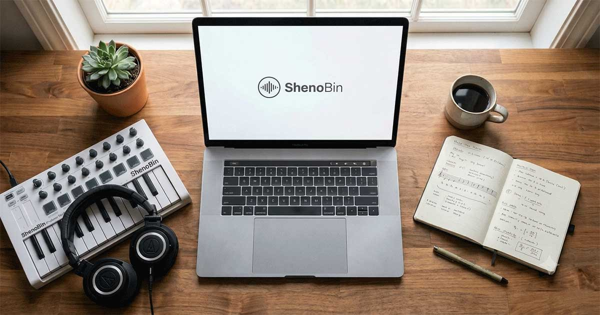

دربارهٔ شنوبین
شنوبین یک فضای ساخت موسیقی و یادگیری تئوری در مرورگر است. پیانو رول، ابزارهای صدا، نمایشگرهای تئوری و قابلیتهای ایدهپردازی را کنار هم میگذارد تا نوازنده بتواند ایدهای را بسازد، بشنود و گسترش دهد.

چه مسئلهای را حل میکند؟
شنوبین کاوش تئوری موسیقی را دیداریتر میکند و فاصلهٔ بین یک ایده و یک طرح قابلشنیدن را کاهش میدهد. هنرجوها و مدرسها میتوانند ارتباط گامها و آکوردها را ببینند؛ آهنگسازها و تولیدکنندهها نیز میتوانند الگو بسازند، آن را با سازهای شبیهسازیشده بشنوند و برای ادامه به نرمافزار موسیقی خود منتقل کنند.
ابزارهای محیط کار
- ساخت و پخش نت در پیانو رول همراه با کنترل تمپو، گام و تونالیته.
- محاسبه و پیشنهاد آکورد و نمایش تعاملی دایرهٔ پنجمها.
- ادامهٔ ملودی بر اساس زنجیرهٔ مارکوف و تولید الگوهای درام.
- سینتیسایزر داخلی و نمایش آکورد در حالت تمرین.
- ذخیرهٔ محلی پروژه و خروجی گرفتن به قالب MIDI یا WAV.
برای چه کسانی مناسب است؟
شنوبین برای هنرجوها و مدرسهای موسیقی، ترانهسراها و تولیدکنندگانی مناسب است که به یک محیط سریع برای آزمایش طرحهای موسیقایی نیاز دارند. این برنامه در مرورگر مدرن اجرا میشود و مخزن پروژه بستهٔ افزونهٔ Chrome را نیز دارد. برای اجرا به JavaScript و Web Audio نیاز است؛ شنوبین جایگزین یک ایستگاه کاری صوتی کامل نیست.
رایگان و متنباز
پروژه با مجوز GNU GPL نسخهٔ ۳ یا بالاتر منتشر شده است. README پروژه همچنین از مجوز تجاری جداگانه برای کاربردهایی که به شرایطی بیرون از GPL نیاز دارند نام میبرد. استفاده از وباپ نیاز به خرید ندارد؛ این به معنی رایگان بودن مجوز تجاری جداگانه نیست.